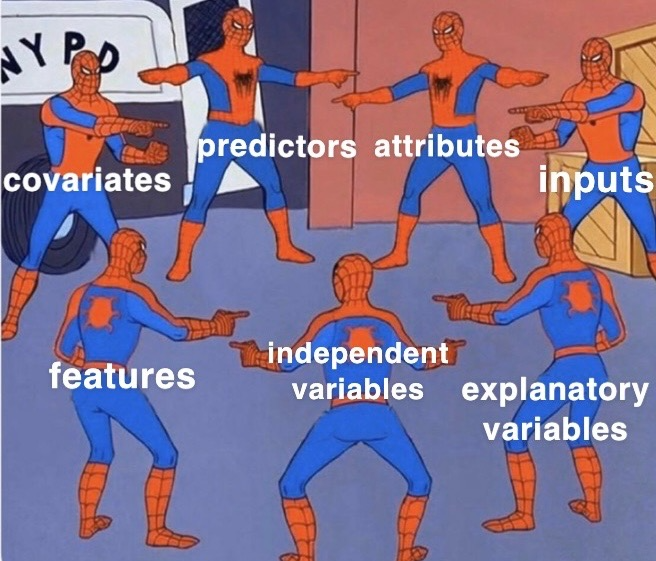
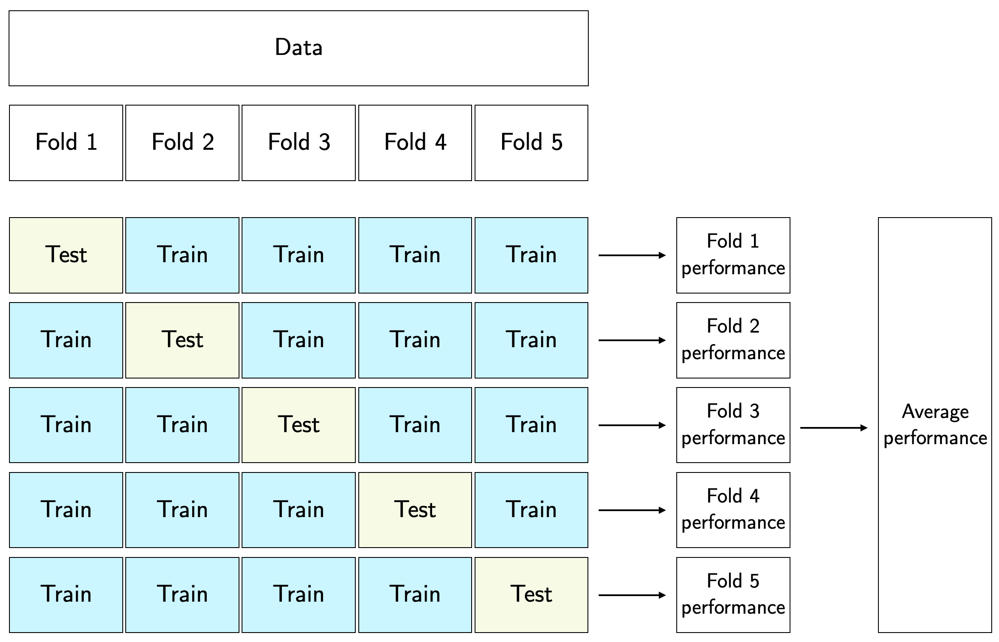
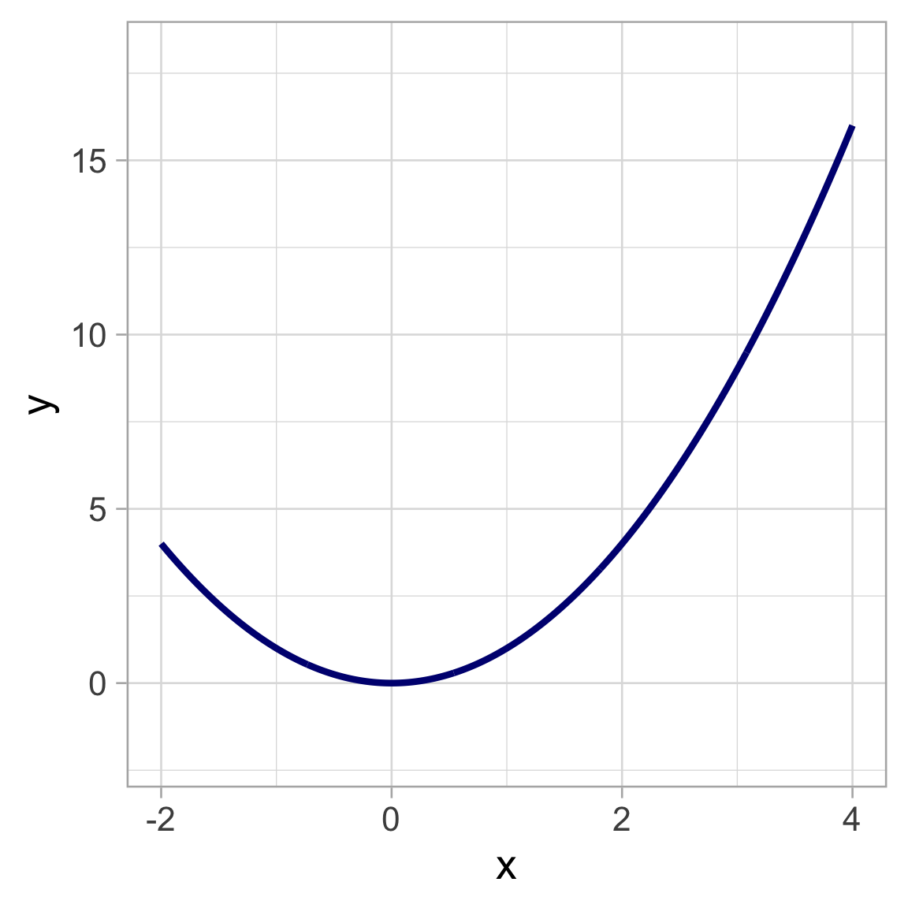
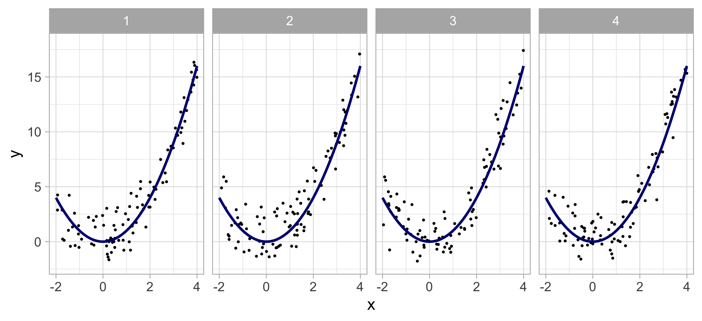
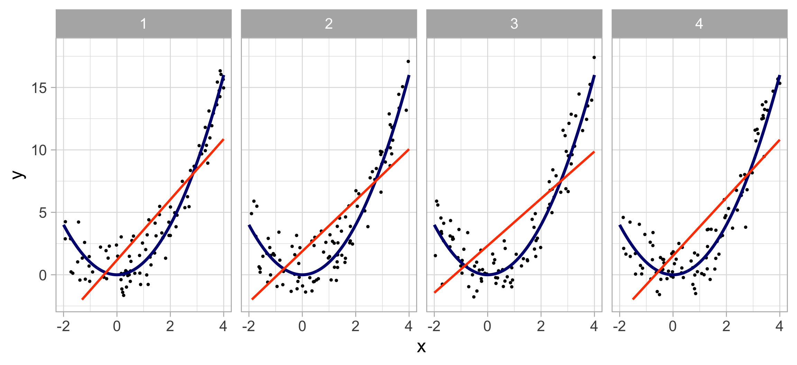
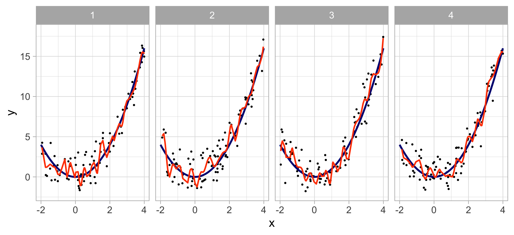

So far, we have discussed clustering, which is a form of unsupervised learning. Now, we turn to supervised learning
Goal: uncover associations between a set of predictor (i.e, independent/explanatory) variables/features and a single repsonse (i.e., dependent) variable
Example: Given player tracking data from the NFL with the x,y coordinates of every player on the field at every tenth of the second. Can we predict how far a ball-carrier will go at any given moment they have the football?
Note: they’re all the same

Examples of statistical learning methods / algorithms
You are probably already familiar with statistical learning — even if you did not know what the phrase meant before
Examples of statistical learning algorithms include:
Generalized linear models (GLMs) and penalized versions (lasso, ridge, elastic net)
Decision trees and its variants (e.g., random forests, boosting)
Two main types of problems:
Regression models: estimate average value of response given a set of covariates (i.e. the response is quantitative)
Classification models: determine the most likely class of a set of discrete response variable classes given a set of covariates (i.e. the response is categorical)
Which method should I use in my analysis?
Depends on your goal — the big picture: inference vs prediction
Let \(Y\) be the response variable, and \(X\) be the predictors, then the learned model will take the form:
\[
\hat{Y}=\hat{f}(X)
\]
Care about the details of \(\hat{f}(X)\)? \(\Rightarrow\) You want to peform statistical inference
Fine with treating \(\hat{f}(X)\) as a obscure/mystical machine? \(\Rightarrow\) Your interest is prediction
Note: while any algorithm can be used for prediction, options are limited for inference
Active area of research on using more mystical models for statistical inference
The trade-offs
Some trade-offs
There are several trade-offs between different algorithms
Model flexibility vs interpretability
Linear models are easy to interpret; gradient-boosted trees are not
Good fit vs overfit or underfit
How do we know when a model fit is just right?
Parsimony versus black-box
Depending on our goal, we may prefer a simpler model involving fewer variables over a black-box involving more (or all) predictors
Model flexibility vs interpretability
Generally speaking: trade-off between a model’s flexibility (i.e. how “wiggly” it is) and how interpretable it is
The simpler parametric form of the model, the easier it is to interpret
Hence why linear regression (least squares) is popular in practice
Parametric models, for which we can write down a mathematical expression for \(f(X)\)before observing the data (e.g. linear regression), are inherently less flexible
Nonparametric models, in which \(f(X)\) is estimated from the data (e.g. kernel regression)
Data are generated from a smoothly varying non-linear model (shown in black), with random noise added:
\[
Y = f(X) + \epsilon
\]
Left panel: intuitive notion of the meaning of model flexibility
Right panel: how the mean squared error (model assessment metric) changes with flexibility (will come back to this panel later)
Model flexibility
Orange line: an inflexible, fully parametrized model (simple linear regression)
Cannot provide a good estimate of \(f(X)\)
But cannot overfit by modeling the noisy deviations of the data from \(f(X)\)
Model flexibility
Green line: an overly flexible, nonparametric model
It can provide a good estimate of \(f(X)\)
… BUT it goes too far and overfits by modeling the noise. This is NOT generalizable: bad job of predicting response from “unseen” data
So… how do we deal with flexibility?
We want to learn a statistical model that provides a good estimate of \(f(X)\)without overfitting
Split the data into two groups:
Training data: data used to train models
Test data: “held-out” data used to test the learned models
Repeat data splitting \(k\) times:
Each observation is placed in the “held-out” / test data exactly once
This is called k-fold cross validation (typically set \(k\) to 5 or 10) . . .
By assessing models using “held-out” data, we act to ensure that we get a generalizable(!) estimate of \(f(X)\)
k-fold cross validation

Toy illustration of 5-fold CV
\(k\)-fold cross validation is often the preferred approach, but the trade-off is that CV analyses take \({\sim}k\) times longer than analyses that utilize train-test splitting (note, too, that \(k\) must be selected)
Model assessment
Right panel shows a metric of model assessment, the mean squared error (MSE) as a function of flexibility for both a training and test datasets
Training error (gray line) decreases as flexibility increases
Test error (red line) decreases while flexibility increases until the point a good estimate of \(f(X)\) is reached, and then it increases as it overfits to the training data
Brief note on reproducibility
An important aspect of statistical analysis is that it is reproducible. You should…
Record your analysis in a notebook (e.g., R Markdown). This notebook should be complete enough such that if you gave it and datasets to someone, they should be able to:
Recreate your entire analysis
Achieve the exact same (numerical) results
To ensure they achieve the exact same (numerical) results, we can set a seed before each instance of random sampling (e.g., when assigning data to training or test sets or \(k\)-folds)
set.seed(47) # can be any number....sample(10,3) # sample three numbers between 1 and 10 inclusive
[1] 9 2 7
set.seed(47) sample(10,3) # voila: the same three numbers!
[1] 9 2 7
Model assessment metrics (regression)
Loss function (aka objective or cost function) is a metric that represents the model’s quality of fit at a given observation
Quadratic loss: squared differences between model predictions \(\hat{f}(X)\) and observed data \(Y\). That is, for each observation \(i\):
We estimate the risk (i.e. the expected loss) of a model by taking the average of the loss function over all observations — this represents the quality of fit of a model
The expected quadratic loss is called the mean squared error (MSE):
Model selection: picking the best model from a suite of possible models (e.g., using MSE for a regression models or misclassification rate for a classification models)
Two things to keep in mind:
Ensure an apples-to-apples comparison of metrics
Every model should be learned using the same training and test data
Do not resample the data between the time the time you, e.g., perform linear regression vs the time you perform random forest
An assessment metric is a random variable, i.e., if you choose different data to be in your training set, the assessment metric will be different.
For regression, a third point should be kept in mind: a metric like MSE is unit-dependent
An \(\text{MSE} = 0.001\) in one analysis context is not necessarily better/worse than \(\text{MSE} = 100\) in another
An example true model

The repeated experiments…

The linear regression fits

Look at the plots. For any given value of \(x\):
The average estimated \(y\) value is offset from the truth (high bias)
The dispersion (variance) in the estimated \(y\) values across experiments is relatively small (low variance)
The spline fits

Look at the plots. For any given value of \(x\):
The average estimated \(y\) value approximately matches the truth (low bias)
The dispersion (variance) in the estimated \(y\) values across experiments is relatively large (high variance)
Bias-variance trade-off
Here, we define the “best” model as the one that minimizes the test-set MSE.
The true MSE can be decomposed into \({\rm MSE} = {\rm (Bias)}^2 + {\rm Variance}\)
Towards the left: high bias, low variance. Towards the right: low bias, high variance.
The optimal amount of flexibility is somewhere in the middle
Principle of parsimony (Occam’s razor)
An English translation: “Entities must not be multiplied beyond necessity”
You do this all the time — weighing simplicity with outcome (e.g. when giving directions)
In terms of model selection: When faced with several methods that give roughly equivalent performance, pick the simplest one
The curse of dimensionality
The more features, the merrier?… Not quite
Adding additional signal features that are truly associated with the response will improve the ftted model
Reduction in test set error
Adding noise features that are not truly associated with the response will lead to a deterioration in the model
Increase in test set error
Noise features increase the dimensionality of the problem, increasing the risk of overfitting